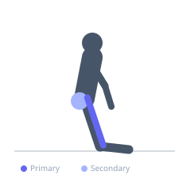
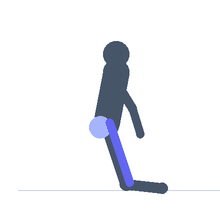

Exercise guide / Kneeling Hip Flexor Stretch
Kneeling Hip Flexor Stretch
The kneeling hip flexor stretch targets the iliopsoas and rectus femoris through sustained hip extension of the rear leg in a kneeling lunge position. It is one of the most effective and widely used stretches for counteracting hip flexor tightness from prolonged sitting, which is associated with anterior pelvic tilt and lower back discomfort. The stretch should be felt in the front of the hip of the kneeling leg.
Primary muscles
psoas major
iliacus
rectus femoris
Secondary muscles
tensor fasciae latae
Stabilizers
transverse abdominis
Equipment
No Equipment (Bodyweight)


Starting position
- Kneel on one knee on the floor or a mat, with the other foot forward in a lunge position. The rear knee is on the ground, the front foot is flat. Torso upright.
Setup
- Use a mat or folded towel under the kneeling knee for comfort. Place hands on the front knee or the front thigh for balance.
Steps
- Step 1: Begin in a kneeling lunge with the rear knee on the floor and front foot forward.
- Step 2: Tuck the pelvis under by gently squeezing the glutes of the rear leg — this posteriorly tilts the pelvis and increases the stretch.
- Step 3: Shift the hips forward gently until a stretch is felt in the front of the rear hip.
- Step 4: Hold the position for 30–90 seconds, breathing normally.
- Step 5: Release and switch sides.
Coaching cues
- Squeeze the glute of the rear leg to deepen the stretch
- Stand tall through the torso — do not collapse forward
- Breathe into the front of your hip
Breathing
- Breathe deeply and slowly throughout the hold. Each exhale can allow the hips to relax slightly further into the stretch.
Range of motion
- Shift the hips forward until a moderate stretch is felt in the front of the rear hip. The front knee should not extend beyond the toes.
Tempo
- Hold 30–90 seconds per side. Perform 2–4 rounds.
Common mistakes
- Anterior pelvic tilt during the stretch, which reduces tension on the iliopsoas — tuck the pelvis
- Leaning the torso forward, which reduces hip extension and diminishes the stretch
- Not holding long enough — brief holds provide minimal flexibility adaptation
Safety
- If the kneeling knee causes discomfort, place padding underneath
- Do not force past the point of a moderate stretch sensation
Training
- mobility: 2–4 reps
- mobility: 1–3 sets
- Rest: {'mobility': 15}